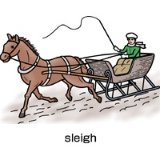

htmlify is a lightweight text to HTML converter implemented in PikaScript. It takes plain text formatted with a minimal markup language and outputs corresponding HTML. The script is mainly used to convert the documentation in this repository from .txt sources into the docs/help HTML pages and PikaScript Documentation.html.
The converter recognizes a small set of conventions:
Any text that does not match a special pattern is HTML escaped to ensure valid output. Source files are assumed to be encoded with UTF-8.
Headers become <h1>, <h2> or <h3> respectively and automatically turn into named anchors that can be referenced simply by writing the exact words again elsewhere.
To convert a document you load htmlify.pika and call the htmlify function with the text to process. Below is the minimal command used by this project to generate the main documentation:
include('tools/htmlify.pika');
src = load('docs/PikaScript Documentation.txt');
html = htmlify(src);
save('docs/PikaScript Documentation.html', html);
A helper script tools/htmlifyFile.pika performs the same conversion from the command line. Pass the text file and optionally a CSS file:
output/PikaCmd tools/htmlifyFile.pika README.txt custom.css
The following text demonstrates most features of htmlify.
Welcome you, welcome, welcome, welcome. I have absolutely nothing to say, so here goes nothing...
We have two paragraphs.
No, three paragraphs.
And this one is broken into several
lines.
If a paragraph starts with one to three spaces of indentation it will be "unwrapped" until...
The next indented line.
You can write bold statements. And underline of course. Italic is written just like that. Enclose text in "grave accents" for teletype, like this.
Urls, like http://www.soniccharge.com automatically turns into href's.
A single line of ========== (at least 10 of them) creates a horizontal divider.
If you write the exact name of a header in this file it will become a reference. Like this: see Interesting Fruits. But only if this section isn't under the header you reference. So Main Header, First Chapter and Introduction won't become references right now.
Local images can be inserted like this:

(recognized extensions are jpg, png and gif).
You can also insert remote images like this:
Local .txt and .html files can be referenced by simply writing a filename anywhere like this: test. You can even reference an anchor inside a local html file. For example: test.
^ can be used for superscript in mathematical expressions, for example: x3*5 + x7 * y. (Requirement: no space around ^ but at least one space somewhere before next ^.)
One or more asterisks after a word creates a reference to a footnote**...
** which must be defined sooner or later
Lists are identified by 1), 2), 3) etc (for ordered lists) and *) or - (for unordered lists). With proper indentation you can create lists beneath other lists.
Examples are indented by four or more spaces and they will be put into <pre> </pre> sections. Take a look at the following example:
This is an example.
+-----------------------------+
|It uses a preformatted style.|
+-----------------------------+
and it continues to here.
But stops here.
Tables are created when a section contains a line with two or more consecutive spaces. These spaces divide the cells horizontally.
This is a table without headers:
| various | things | arranged |
| in | a | three |
| by | three | square |
Cells can expand horizontally like this:
this is a long cell
shorter cells here
double cell
just 1
This is a table with column headers:
| Year | Xylophones | Rusty nails | Unpolished bicycles |
|---|---|---|---|
| 1972 | 309 | 17 | 5.5 |
| 1979 | 292 | 21293921 | 0 |
| 1993 | N/A | 1 | -5 |
| (returned five) | |||
| 2009 | - " - | 2 | 10 |
This is a table with row headers (remember, at least two spaces before and after :):
| First attempt | failed miserably |
|---|---|
| Second attempt | things are getting better |
| Third attempt | wooh, we are getting close now |
| Fourth attempt | oh no, back to square 1 |